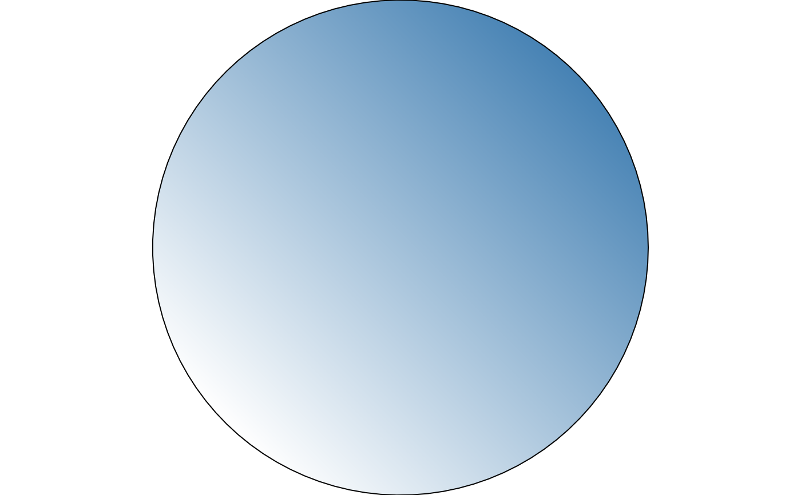
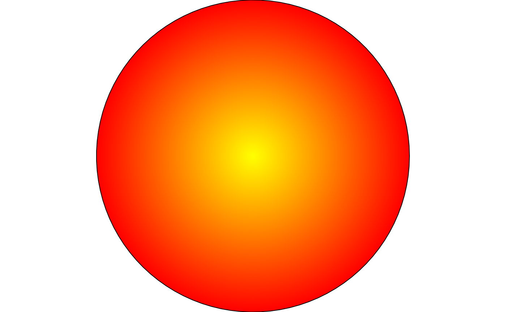
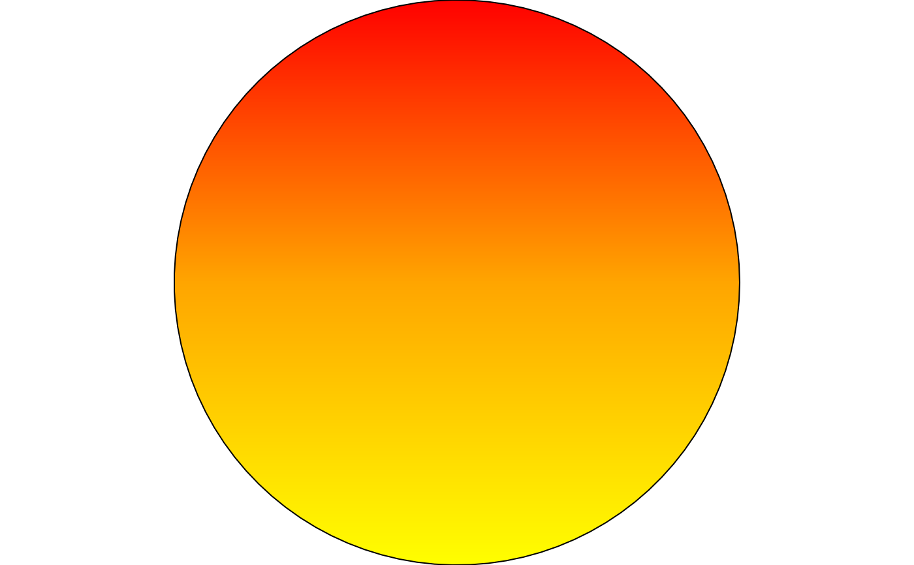
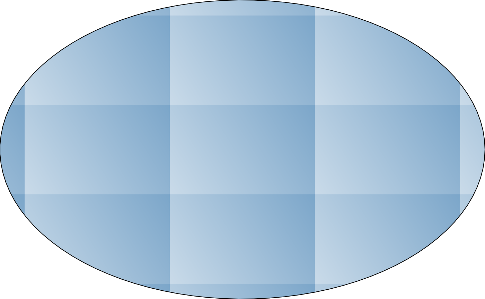

fill_gradient() builds a grid::pattern() fill value whose tile content
is a single rectangle filled with a grid::linearGradient() or
grid::radialGradient(), depending on type.
Arguments
- color
Two or more colours to interpolate between.
- type
Either
"linear"or"radial". Default"linear".- angle
Gradient direction in degrees, for
type = "linear"only (ignored for"radial"). Default45.- stops
Colour stop positions, as a numeric vector the same length as
color, orNULLto space them evenly (the default used bygrid::linearGradient()/grid::radialGradient()). DefaultNULL.- spacing
Tile size, as a fraction of the target's bounding box. Must be a positive number. Default
1(one tile spans the whole shape).- aspect
Width-to-height ratio of the target polygon's bounding box. Must be a positive number. Default
1(a square bounding box).- extend
Passed to the inner
grid::linearGradient()/grid::radialGradient(), controlling what happens beyond the colour stops. Default"pad".
Value
A pattern object as returned by grid::pattern(), suitable for
use as the fill argument to grid::gpar().
Details
Like the other fill_*() helpers, this needs the target's bounding-box
aspect ratio (aspect) to render true rather than stretched – but the
correction is applied differently here. Rather than adjusting the
gradient's own coordinates (the way fill_hatch() adjusts a segment's
direction), fill_gradient() corrects the tile itself to be physically
square, exactly as fill_stipple() does for its dots: once the tile is
square, a gradient specified inside it in plain "npc" needs no further
correction to render at the requested angle, or as a true circle for
type = "radial".
This also means a gradient tile has none of fill_hatch()'s periodicity
concerns: adjacent tiles are simply identical copies of the same square
gradient, with nothing analogous to a hatch line's tile-edge dashing to
avoid.
With the default spacing = 1, one tile spans (and, for a non-square
bounding box, slightly overshoots) the target's entire bounding box,
giving a single smooth gradient across the whole shape – the overshoot
is invisibly clipped away by the target's own outline. Set spacing < 1
for a repeating pattern of small gradient motifs instead.
Examples
draw(shape_circle(fill = fill_gradient(c("white", "steelblue"))))

draw(shape_circle(fill = fill_gradient(c("yellow", "red"), type = "radial")))

# three or more colours interpolate in sequence; angle rotates a linear
# gradient's direction
draw(shape_circle(
fill = fill_gradient(c("yellow", "orange", "red"), angle = 90)
))

# spacing < 1 repeats the gradient as a small tiled motif instead of one
# smooth sweep across the whole shape
draw(shape_circle(
fill = fill_gradient(c("white", "steelblue"), spacing = 0.3)
))
